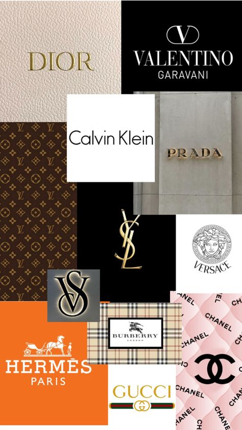

Marchi di moda
1.Storia e tradizione
I marchi di moda hanno una lunga storia e tradizione che riflette l'evoluzione della moda stessa nel corso dei secoli. Ecco una breve spiegazione della storia e tradizione dei marchi di moda:
Storia:
- Inizio: I primi marchi di moda risalgono al XIX secolo, quando stilisti come Charles Frederick Worth iniziarono a mettere il proprio nome sulle creazioni e a definire uno stile distintivo.
-Anni '20 e '30: Il concetto di marchio di moda si sviluppò ulteriormente con l'avvento della haute couture e la creazione di case di moda iconiche come
Chanel e
Dior .
- Anni '50 e '60:Il boom dell'industria della moda portò alla nascita di marchi internazionali come
Gucci,
Prada e
Versace, che divennero simboli di lusso e stile.
- Anni recenti: Con l'avvento della globalizzazione e dell'e-commerce, nuovi marchi emergenti hanno preso piede, introducendo nuove tendenze e modelli di business nell'industria della moda.
Tradizione:
- Eredità e artigianato: Molti marchi di moda mantengono una forte tradizione legata all'artigianato e alla qualità dei materiali utilizzati nella produzione.
- Iconicità e riconoscibilità: I marchi di moda spesso si basano su simboli, colori o stili iconici che li rendono immediatamente riconoscibili nel panorama della moda.
- Innovazione e influenze culturali: Anche se radicati nella tradizione, i marchi di moda devono essere in grado di innovare e adattarsi alle mutevoli influenze culturali e alle esigenze dei consumatori per rimanere rilevanti nel tempo.
